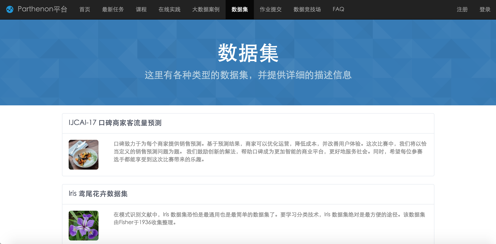
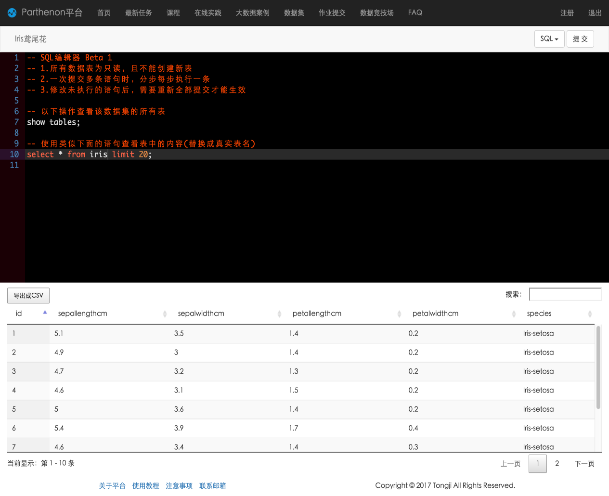

1. 选择数据集
选择导航栏中的“数据集”，可以看到平台中提供的所有数据集，点选需要的数据集，如Iris数据。

2. 执行代码
默认将会跳转到SQL编辑器的界面，左上角显示的是当前数据集的简称，又上角提供执行操作的按钮；界面下方是SQL的编辑框，支持语法高亮，可以一次性在其中输入多条SQL的语句。在这里以下语句来查看Iris数据集的字段结构。
show tables;
select * from iris limit 20;

3. 查看结果
执行的结果将在页面最下方以表格的形式分页呈现，并且支持对结果进行字段排序、二次过滤以及导出。从上图中可以看出Iris数据集共有6个字段，并且展示了部分数据条目作为样例。